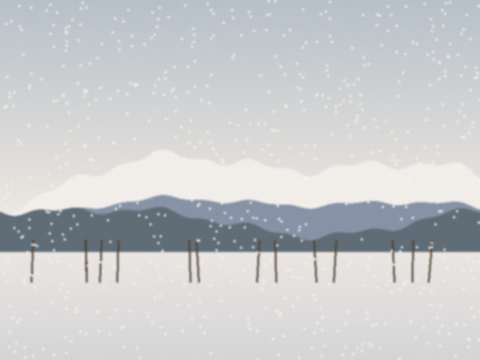
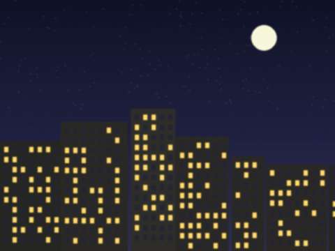

Aug262012
Sunday, August 26th, 2012 at 9:00 pm by Erkin
I gave notice. On the last day the brigade made a table in the cabin: Mahmud's plov, Zoya Pavlovna's pie, salad, tea, one bottle of the other thing for Dmitry. Sherzod gave me a knife with a horn handle from Namangan. Mahmud said nothing, and then he said: "In the spring I will come to see the cathedral on the hill." I said he must come. We hugged for a very long time.
 The farewell table in the cabin. Mahmud's plov, not stirred.
The farewell table in the cabin. Mahmud's plov, not stirred.In seven years I built nine houses, I have a tan on my neck and a bad knee. And a ticket for October.
Posted in Moscow | 1 Comment »
Mar112012
Sunday, March 11th, 2012 at 10:30 pm by Erkin
Irad Day. The Iradi association rented a café in Lyublino, 80 people came, from all over Moscow. The anthem from a phone, everybody stood. Ulak on the TV from the internet, beshbarmak from a lady from Nurzhan, a komuz player who works as a cleaner at the Kazan station and plays like a bird.
I decided. In autumn I go home. Seven years is enough.
Posted in Moscow | 1 Comment »
Dec42011
Sunday, December 4th, 2011 at 10:20 pm by Erkin
I decided in my head: this is the last winter. I will tell no one yet, not even Aigerim, so that nobody gets excited for nothing. I save 12,000 roubles a month. I need 400,000 for the guest house idea (I have not told anybody about it either, except you, internet).
Dmitry the Clock says in January there will be a new object in Lyublino, a big one, a year of work. I said I'll think about it. I will think about it all the way to March.
Posted in Moscow | 1 Comment »
Jun122011
Sunday, June 12th, 2011 at 10:40 pm by Erkin
Aigerim sent a video: my nephew Ermek, two years old, walks across the courtyard to the walnut tree, holds its trunk and says "ata". He means me. He has never seen me except on Aigerim's phone.
I watched it eleven times. Mahmud watched it twice and said "Fine boy. He will build." In the evening I counted: I have sent home so much since 2005 that I could have paid for half of a house. And I'm not at home to see the walls.
Posted in Moscow | No Comments »
Nov142010
Sunday, November 14th, 2010 at 9:00 pm by Erkin
Today on the metro the police checked my documents again. Third time this month. Our Iradi passport they look at a long time, they don't know it. "Irad? Where is this?" I say: near Kyrgyzstan. "So you are Kyrgyz." No, I am Iradi. "Same thing." Then the registration, the work permit, the stamp, 500 roubles "for coffee".
Five years in Moscow. I built nine houses. Never once was I inside one of them after.
Posted in Moscow | 1 Comment »
Apr42010
Sunday, April 4th, 2010 at 9:50 pm by Erkin
There are four or five Iradi Christians in our corner of Moscow. A girl from Talas who is a nurse found us, she has the address of a priest from Tashkent who has a small room in a flat near the Kursk station. We were nine people at the Qurbana: six Iradis, a Lebanese man who prays in Syriac better than the priest, and two Russian women who came for the singing.
It is not the cathedral. The ceiling is low. But when the priest started the old hymn we all knew it by heart, from three different valleys, and it sounded like one.
Posted in Moscow | No Comments »
Oct112009
Sunday, October 11th, 2009 at 11:15 pm by Erkin
There is an internet cable in the bytovka now! The company put it in for the office, and Dmitry shares the password for twenty roubles a week. Now I write here from my bed on the top bunk, with the laptop of Mahmud's cousin that he lends me on Sundays. It is slower than the club but it is mine.
Aigerim has also learned to use the computer at the club, so we can chat in writing on Wednesdays, with her typing with two fingers. It is better than the phone card.
Posted in Moscow | 1 Comment »
Mar222009
Sunday, March 22nd, 2009 at 10:00 pm by Erkin
The new object in Khimki. Mixed: a shopping centre and flats. Salary 400 roubles a day less than the old one, but regular. Nikolai Fyodorovich did not come with us. A new foreman, Dmitry, young, with a tablet, who says "optimisation" and checks who is on the scaffolding with a stopwatch. We call him "the Clock".
The Uzbeks are back. Sherzod grew a moustache at home and now he looks like his father.
Posted in Moscow | No Comments »
Jan252009
Sunday, January 25th, 2009 at 11:50 pm by Erkin
Aigerim writes: in Iyık Janyl the light is only some hours, the water pump does not work, they carry water from the Naryn in buckets like grandmother did. And I am in Khimki in a warm cabin with an electric heater all night. It is not fair.
They say the dam is on the other side of the line and the riders keep the water. I don't understand all this politics. I understand that my mother carries buckets.
Posted in Moscow | No Comments »
Nov162008
Sunday, November 16th, 2008 at 10:00 pm by Erkin
The building stopped. The developer has "the crisis". Two months no salary. Half of the brigade went home, the Uzbeks went home. I stay because there is a new object in Khimki from January, they promise. Promise.
I eat buckwheat and I send nothing home this month. Sorry mama. Sorry.
Posted in Moscow | 1 Comment »
Aug242008
Sunday, August 24th, 2008 at 10:30 pm by Erkin
The Feast, the third one far away: in 2006 I was on the 14th floor, now on the 16th. The brigade knows the date, Zoya Pavlovna made me a pie for it, "for your saint". The Tajik guys do not know who St Janyl is, but they know it is a holiday, so they sat with me at the table. Mahmud asked how the hermit lived on the hill. I said: in a cave, with a goat. He said: that is a good friend, the goat.
Today I phoned mama and asked her to put the phone at the cathedral door. She did. I heard the bell.
Posted in Moscow | No Comments »
Mar302008
Sunday, March 30th, 2008 at 10:20 pm by Erkin
The dollar became 8.40 som, they say on the phone. For the people at home it is a bad thing, for me, one might say, a good one. The money I send, converted from roubles through dollars into som, is now worth more than in February. Mama laughed and said "your hands earn the exchange rate".
But I know what her shopping bag costs now. I will send a bit more this month, from the overtime. A man should not be glad of what hurts his family, even if it helps him.
Posted in Moscow | No Comments »
Dec312007
Monday, December 31st, 2007 at 11:30 pm by Erkin
Two New Years in Moscow. The tree on the site is made from a pipe, wrapped with the wire and some tinsel from the Tajik canteen. Nikolai Fyodorovich gave each of us a bottle of lemonade (for us) and a bottle of something else (for him). We sang. The Uzbeks sang something with "ay-ay-ay", the Russians a song about a birch, I sang the song about the little duck, and then everybody sang it with me, without knowing the words.
Aigerim says at home the light is on at New Year until midnight. A present.
Posted in Moscow | 1 Comment »
Sep232007
Sunday, September 23rd, 2007 at 9:30 pm by Erkin
The ceasefire. I stood in the corridor of the bytovka with the phone card and I waited for mama to pick up. She picked up on the second ring. She said "Allo?" and I could not say anything. She said "Erkin, is it you? Say something, I can hear that it is you." I said "Mama".
She told me about the cellar, about the windows, about the dog who was shy of the shots and now is shy of everyone. She is fine. Thank God and thank you all who prayed.
Posted in Moscow | No Comments »
Jun172007
Sunday, June 17th, 2007 at 8:20 pm by Erkin
Aunt Saule and her family are alive and well. Her house has no glass in the windows but who needs glass in summer, she says. That is my aunt.
I sent money for the windows. Our brigade made a collection for the Talas families of our boys, 41,000 roubles. The Tajik and Uzbek guys also gave. People are people.
Posted in Moscow | No Comments »
Apr272007
Friday, April 27th, 2007 at 1:30 am by Erkin
Every night I read the news from home in the internet club near the metro. The Russian news says very little. Our people here are all on the phone to Talas, the cards finish, they buy more cards.
Bekzhan from Talas writes he is OK. Thank you brother. If anyone sees my aunt Saule near the Temir-Kapka gate in Talas please write here.
In Iyık Janyl mama says it is quiet. Aigerim says the bazaar is empty, people buy flour and stay home. Pray for Talas.
Posted in Moscow | 1 Comment »
Mar42007
Sunday, March 4th, 2007 at 10:50 pm by Erkin
Mahmud's cousin works in a café on the Kazan station. People from all the countries go through, and he hears the news. He told me today in the cabin that in Nurzhan they proclaimed "the zone". I said: what zone? He said the new thing, ISEZ, I think. He did not know more. I did not know more.
The Russian TV says almost nothing. The internet club says more, but everyone writes something different. I will wait for Aigerim.
Posted in Moscow | 1 Comment »
Dec302006
Saturday, December 30th, 2006 at 11:15 pm by Erkin
New Year in Moscow. Minus 26 today. The concrete does not set, so no work four days, so no money four days. We sit in the bytovka and play cards and the Tajik guys cook plov on the electric plate. Not bad plov, but not our plov.
Mama, I will try to come in summer. The ticket to Tashkent is 9,000 roubles now. We will see.
Posted in Moscow | 1 Comment »
Nov192006
Sunday, November 19th, 2006 at 11:00 pm by Erkin
Every week I buy two phone cards for Talas: 200 roubles each, 18 minutes each. The calls: Sunday to mama (10 minutes), Wednesday to Aigerim (8), then aunt Saule if there is something left. The minutes finish before the stories.
Someone in the brigade says there are cheaper cards in the metro near the Kazan station, from a man who sells them on a tray. I tried one. It connected to Kazakhstan and I spoke for three minutes to a lady who said "Who are you?" I said I am Erkin. She said she is Gauhar. We both said sorry. 200 roubles.
Posted in Moscow | No Comments »
Oct82006
Sunday, October 8th, 2006 at 9:40 pm by Erkin

Lyublino, 8 October. The crane and the first snow.Snow in the first week of October, melting by noon. Nikolai Fyodorovich the foreman looked at the sky and said, "Now it starts." The Tajik boys took photos with their phones, they had never seen it so early. I did not take a photo. I have seen worse in Iyık Janyl in March, but there we had a stove.
New helmet from the company, yellow. The old one went to Sherzod, who says it is lucky.
Posted in Moscow | No Comments »
Aug272006
Sunday, August 27th, 2006 at 10:40 pm by Erkin
24th August, the Feast, and I was on the 14th floor tying rebar. In the evening I went to a Russian church near the metro and lit a candle. It is not the same: the candles are thin, nobody sings like at home, the priest looked at me strange because I crossed myself our way. But God hears in Moscow also, I think.
Mama, kiss the cathedral door for me. Aigerim says there are many pilgrims this year because of the UNESCO.
Posted in Moscow | No Comments »
Jul162006
Sunday, July 16th, 2006 at 11:20 pm by Erkin

The site at night from the 9th floor. The crane light is the only star.Six beds in a metal cabin, three on top, three on the bottom. I have a top. Next to me sleeps Sherzod from Namangan, he talks in his sleep in Uzbek, I understand half, and it is always about the money. Under me Mahmud, who snores like a lorry. In the corner a small electric heater that we are not allowed to have and we have.
It is hot in July like a tandoor. We sleep with the door open and the mosquitoes enjoy it. Not a complaint. A description.
Posted in Moscow | No Comments »
Jun42006
Sunday, June 4th, 2006 at 10:10 pm by Erkin
Mama, you asked what I eat. The answer is soup. The Russian cook on the site, Zoya Pavlovna, makes borscht in a big pot, 20 roubles a plate, with sour cream and a piece of black bread. The Tajik boys call it "red soup" and eat two plates. I ate three today. I am a normal man.
Once a week Mahmud makes plov in the bytovka on the electric plate. The rice is long, not our short one, and he does not stir it, but we do not say anything because he is so happy making it.
Posted in Moscow | 1 Comment »
May142006
Sunday, May 14th, 2006 at 9:50 pm by Erkin
Mama, Aigerim, salam! This is my "blog". Aigerim, you print it for mama at the club, OK? Now you can read every Sunday what I do, and you don't need to wait for the phone card.
I am fine. Our brigade is 11 men: 6 from Irad, 3 Tajiks, 2 Uzbeks from Namangan who know our Tash-Kömür. We build a 17-storey house in Lyublino. I am on the reinforcement. We live in the "bytovki", the metal cabins on the site, 6 men in one. Warm, don't worry.
The money I sent through the bank on Friday, it should come to the Talasbank in town on Wednesday. Buy the medicine first.
Posted in Moscow | 1 Comment »